Pág. 18
SQL injection vulnerability in WHERE clause allowing retrieval of hidden data
Modify a query to return all products, including unreleased ones.
PORTAFOLIO DIGITAL - 177203
Laboratorios de Explotación y Mitigación
Tipo de SQLi: SQL Injection basada en manipulación lógica (Boolean-Based SQL Injection) en la cláusula WHERE.
Se trata de una inyección que altera la lógica de la consulta SQL agregando una condición siempre verdadera (OR 1=1), lo que provoca que la cláusula WHERE devuelva todos los registros de la tabla.
También puede clasificarse como:
El objetivo fue modificar la cláusula WHERE para que la condición evaluara como verdadera en todos los casos, permitiendo la recuperación de datos que normalmente no serían visibles para el usuario.
Acceso
Interceptar
Payload
Solved
Primero ingresamos al laboratorio desde Web Security Academy y copiamos la URL generada automáticamente. El objetivo del laboratorio era explotar una vulnerabilidad de SQL Injection en la cláusula WHERE, con el fin de recuperar datos ocultos (productos que normalmente no se muestran).
Cuando cargamos la página vemos una tienda con filtros por categoría como:
Abrimos Burp Suite Community Edition y nos dirigimos a: Proxy → Intercept
Esto abre el navegador interno de Burp, el cual pasa todo el tráfico HTTP a través del proxy para poder interceptarlo y modificarlo.
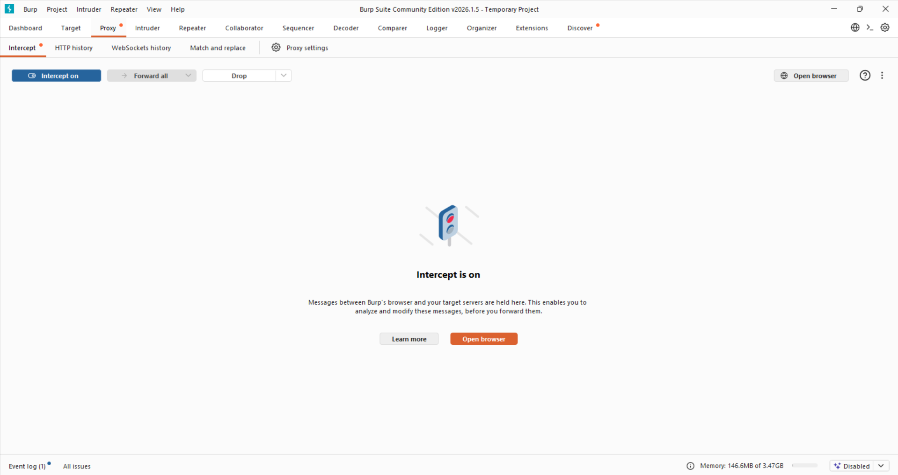
Esto permitió que la página cargara correctamente dentro del navegador de Burp.
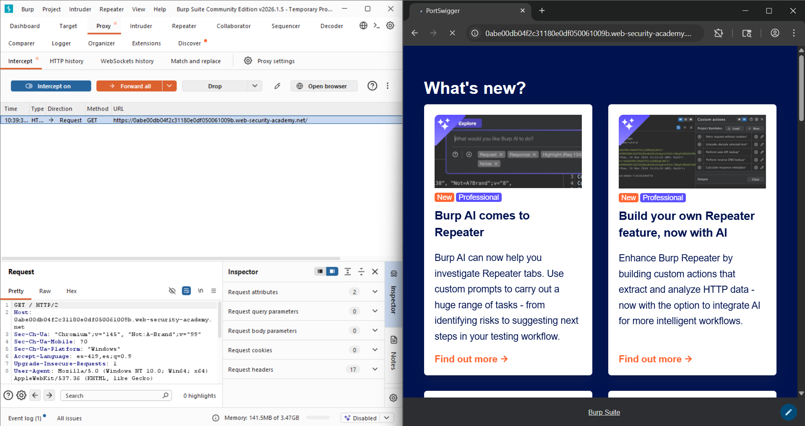
Después hacemos clic en la categoría: Corporate gifts. En ese momento Burp interceptó una petición como esta:
Aquí identifiqué que el parámetro se envía en la URL y es usado para filtrar productos. Este tipo de parámetro suele insertarse directamente en consultas SQL como:
Si la aplicación no valida correctamente el input, puede ser vulnerable a SQL Injection.
Para poder modificar manualmente la petición:
El Repeater permite modificar y reenviar solicitudes múltiples veces para probar diferentes cargas útiles (payloads).
En el Repeater modificamos la primera línea donde aparece el parámetro category. Originalmente estaba así:
GET /filter?category=Corporate+gifts HTTP/2Lo modificamos agregando el payload '+OR+1=1-- quedando así:
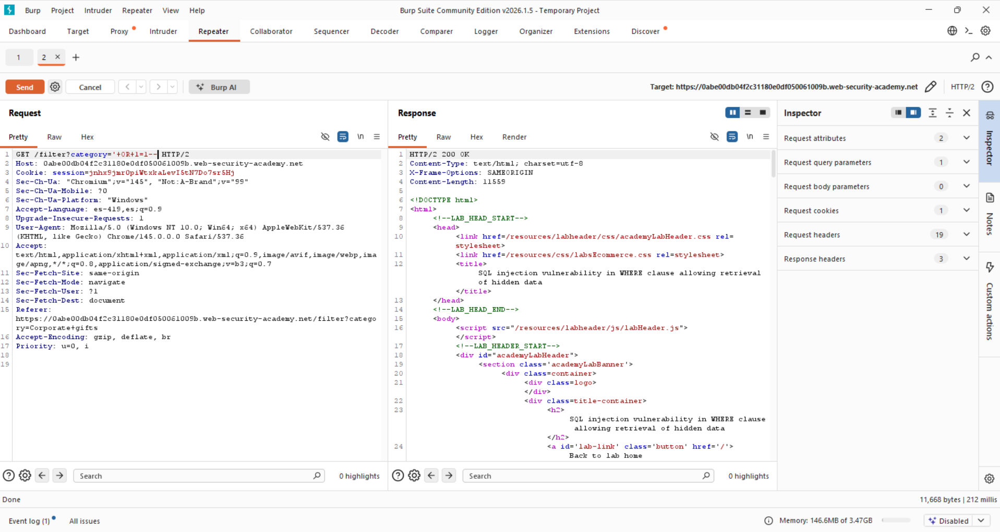
Después de enviar la petición modificada:
El laboratorio marcó el estado como Solved. Esto confirma que:
Tipo de SQLi: Error-based / Classic SQL Injection
Vulnerabilidad: El formulario de login construye una consulta SQL dinámica concatenando directamente los valores de los campos username y password sin sanitización ni uso de sentencias preparadas.
La consulta típica es del tipo: SELECT * FROM users WHERE username = 'input_username' AND password = 'input_password'
Al inyectar un cierre de comilla simple (') en el campo username seguido de un comentario SQL (--), se altera la lógica: el -- comenta el resto de la consulta (incluyendo la verificación de contraseña), convirtiendo la condición en verdadera siempre que exista el usuario administrator.
Esto permite bypass de autenticación sin necesidad de conocer la contraseña, aprovechando que la aplicación no escapa caracteres especiales y refleja errores o resultados directamente. Se trata de una inyección in-band clásica con manipulación lógica (no requiere UNION ni extracción de datos adicionales).
Explotar una vulnerabilidad SQL Injection en el formulario de login para autenticarse como el usuario administrator sin conocer su contraseña real, modificando la lógica de la consulta SQL de autenticación y logrando acceso no autorizado a la aplicación.
Login
Payload
Bypass
Admin Access
Accedemos al portal de autenticación del laboratorio.
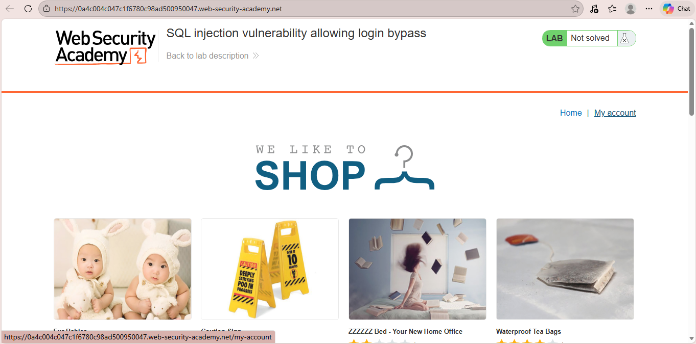
Ingresar en el campo Username: administrator'--
(El cierre de comilla simple termina la cadena del username, y -- comenta el resto de la consulta, incluyendo la cláusula AND password = '...').
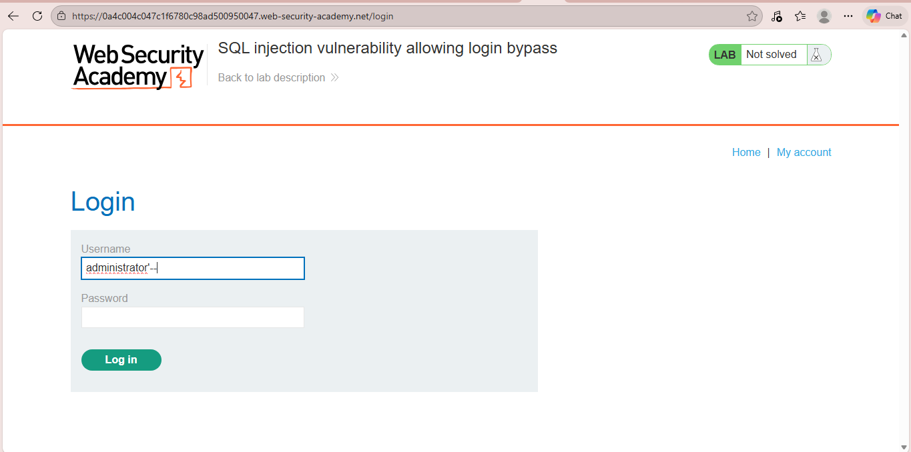
Ingresar en el campo Password: cualquier valor arbitrario (ej. 123, vacío o lo que sea).
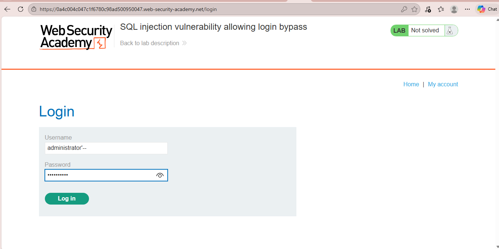
La consulta efectiva se convierte en algo como:
El -- comenta todo lo posterior, por lo que la condición se reduce a username = 'administrator', autenticando como administrador si el usuario existe.
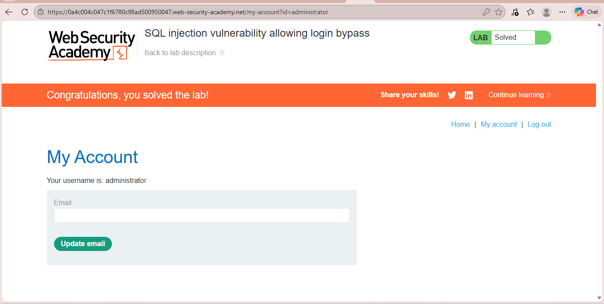
El payload principal utilizado es: Username: administrator'-- | Password: cualquier valor arbitrario
AND password = '...'.SELECT * FROM users WHERE username = 'administrator'El payload explota la concatenación insegura de entradas en la consulta SQL y la falta de escape de caracteres especiales, logrando un bypass lógico de la autenticación sin necesidad de extraer datos ni usar técnicas más avanzadas como UNION o blind injection.
PreparedStatement en Java, cursor.execute() con placeholders en Python, PDO en PHP).--).--, OR 1=1).Tipo de SQLi: UNION-based SQL Injection
Objetivo: Explotar una vulnerabilidad de SQL Injection basada en UNION para obtener y mostrar la versión de la base de datos Oracle.
Vulnerabilidad: La aplicación construye una consulta SQL concatenando directamente el parámetro category sin validación adecuada, permitiendo insertar código SQL adicional.
Ejemplo conceptual vulnerable:
El atacante lo convierte en:
Una vez abierto el laboratorio y dentro de Burp Suite, usaremos el navegador de este el cual es Chromium.
Dentro de Chromium entraremos con la url del laboratorio.
Volviendo a Burp Suite activamos intercept off, para así interceptar la petición.
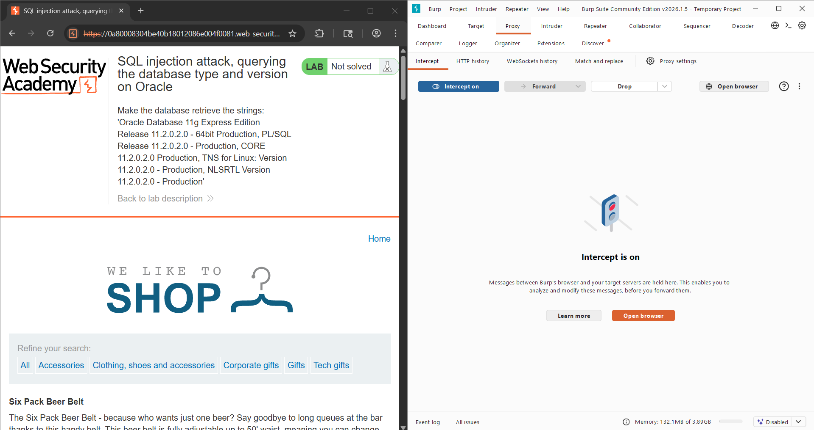
Así se verá Burp Suite cuando haya interceptado peticiones:
Dentro del navegador de Chromium en la pagina del laboratorio, vamos a cambiar la categoria de productos, en este caso a Gifts, para hacer el tipo de petición que necesitamos, ya que ese parametro de category es vulnerable.
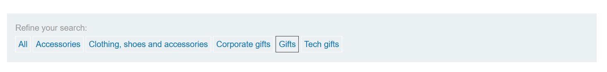
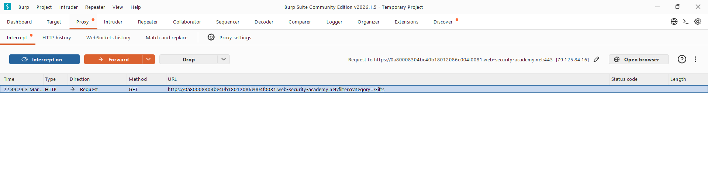
Para confirmar que ese parametro es vulnerable a SQLi, enviamos la petición al repetidor, dentro de Burp Suite y la modificamos cambiando la categoría “Gift”, por el símbolo: ‘


Como resultado de repetir la petición modificada, el servidor respondió con un un error, lo cual indica que es vulnerable ya que se rompió la consulta (muy buena señal de SQLi).

Una vez que confirmamos que es vulnerable a SQLi, vamos a hacer una consulta haciendo una inyeccion de codigo SQL de tipo:
para obtener el número de columnas. Y obtenemos: Lo cual nos devuelve 2 columnas.

En este paso se verfica que columnas acepten datos de tipo texto, usando de nuevo el repetidor y la consulta:
Se usa “abc”, y “def” para verificar que efectivamente acepte datos de tipo texto, y se obtiene lo siguiente:

Esto indica que efectivamente las columnas aceptan datos de tipo texto ya que la respuesta fue = “200 ok” y la inyección funciono correctamente.
Payload final, se envia la petición de:
Esto con el objetivo de mostrar la versión de la base de datos Oracle en la página.

Se extrajo información sensible directamente desde la base de datos como:
Y también:
Todo eso viene de: v$version

Payload usado: '+UNION+SELECT+BANNER,+NULL+FROM+v$version--
Resultado: La aplicación muestra la versión de la base de datos en pantalla.
Usar consultas preparadas (Prepared Statements)
Ejemplo:
Esto evita que la entrada del usuario se ejecute como código SQL.
Ademas:
Vulnerabilidad: SQL Injection basada en UNION
Impacto: Exposición de información sensible (versión del DBMS)
Solución: Consultas parametrizadas
Tipo de SQLi: Es una SQL Injection basada en UNION (UNION-based SQLi).
Objetivo: Mostrar la versión de la base de datos usando un ataque UNION-based SQL Injection.
Vulnerabilidad: La vulnerabilidad está en el parámetro category del filtro de productos.
Probablemente la aplicación ejecuta algo como:
Pero como no valida correctamente la entrada del usuario, puedes cerrar la comilla y añadir tu propia consulta: ' UNION SELECT ...
La aplicación:
Eso permite o deja abierto a romper la consulta original, inyectar un UNION SELECT, y poder extraer información arbitraria de la base de datos.
Una vez abierto el laboratorio y dentro de Burp Suite, usaremos el navegador de este el cual es Chromium. Dentro de Chromium entraremos con la url del laboratorio.
Volviendo a Burp Suite activamos intercept off, para así interceptar la petición.
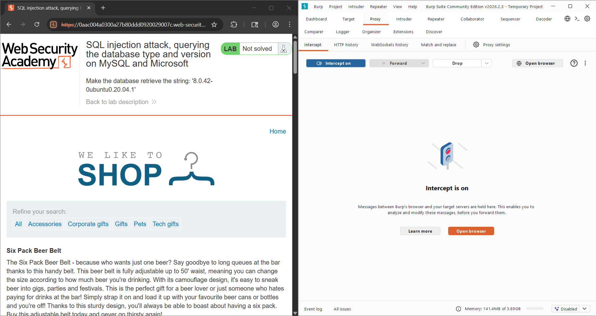
Así se verá Burp Suite cuando haya interceptado peticiones:
Dentro del navegador de Chromium en la pagina del laboratorio, vamos a cambiar la categoria de productos, en este caso a Gifts, para hacer el tipo de petición que necesitamos, ya que ese parametro de category es vulnerable.
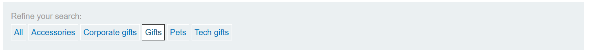
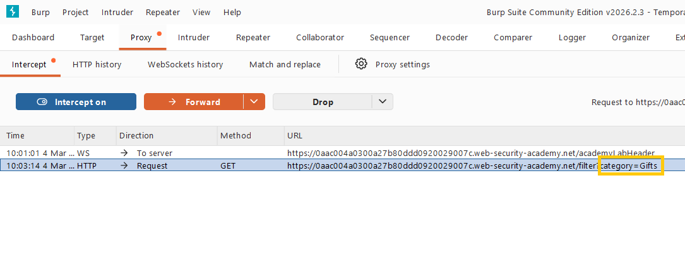
Para confirmar que ese parametro es vulnerable a SQLi, enviamos la petición al repetidor, dentro de Burp Suite y la modificamos cambiando la categoría “Gift”, por: Gift’
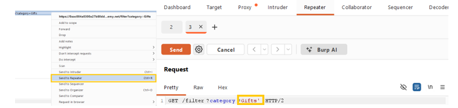
Como resultado de repetir la petición modificada, el servidor respondió con un un error, lo cual indica que es vulnerable ya que se rompió la consulta (muy buena señal de SQLi).
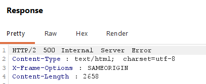
Sabemos que debemos usar UNION, pero necesitamos saber cuántas columnas devuelve la consulta original.
Método 1: ORDER BY. Probaremos incrementando:
Gifts' ORDER BY 1--+Gifts' ORDER BY 2--+Gifts' ORDER BY 3--+El lab indica que son 2 columnas. El servidor responde “ok”, lo cual indica que la inyección se hizo correctamente, el comentario --+ está bien formado y que existen al menos 2 columnas.
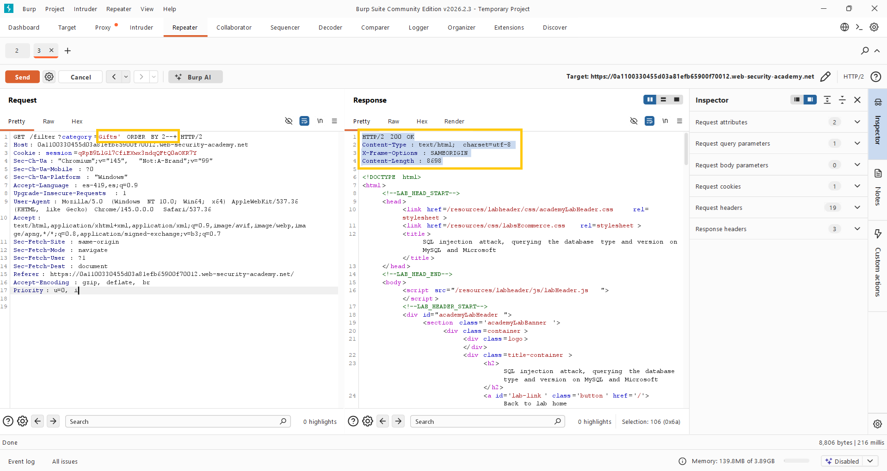
Se identifica si ambas columnas aceptan texto. Usa el payload que indica el lab:
Se inyecta usando de nuevo el repetidor y la consulta.
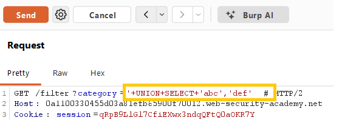
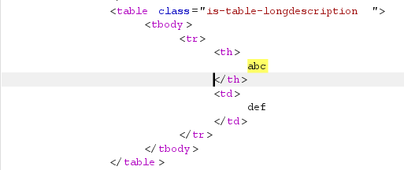
Ahora ejecutamos el payload final:
Explicación:
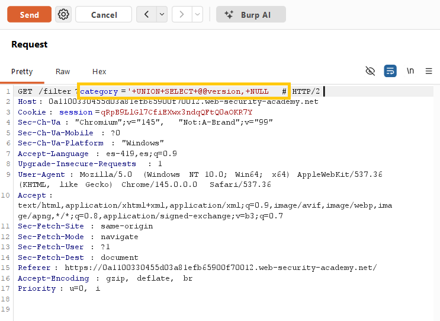
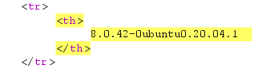
Con esto la inyeccion funciono correctamente en el servidor y obtuvimos la versión: 8.0.42-0ubuntu0.20.04.1, que corresponde a MySQL 8.0.42, corriendo en Ubuntu 20.04. Con esto el laboratorio queda solucionado.
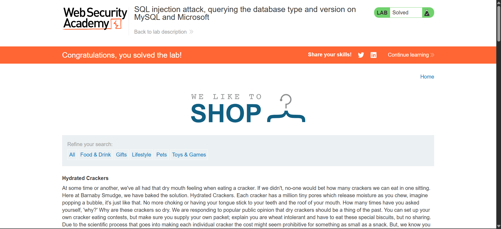
Se identificó una SQL Injection basada en UNION en el parámetro category del filtro de productos. La aplicación construye consultas dinámicas concatenando directamente la entrada del usuario dentro de una cláusula WHERE, sin utilizar consultas parametrizadas ni mecanismos adecuados de sanitización.
La vulnerabilidad permite la manipulación de la estructura de la consulta SQL y la ejecución de instrucciones arbitrarias sobre el motor de base de datos. Impacto: Exposición de información sensible del sistema, incluyendo versión del gestor de base de datos.
El payload exitoso fue: ' UNION SELECT @@version, NULL#
Este payload cierra la cadena original de la consulta y utiliza el operador UNION para combinar resultados. Invoca la variable global @@version del sistema en MySQL, permitiendo obtener la versión exacta del motor y usa NULL para respetar la cantidad de columnas requeridas. Emplea # para comentar el resto de la consulta original. Como resultado, se logró recuperar la cadena de versión del servidor de base de datos.
Severidad estimada: Alta | Riesgo principal: Enumeración del sistema y posible extracción completa de datos mediante explotación adicional.
Tipo de SQLi: Union-based SQL Injection (In-band / Clásico).
Objetivo: Explotar una vulnerabilidad SQL Injection en el parámetro category del filtro de productos para enumerar sistemáticamente el contenido de la base de datos no-Oracle: determinar el número de columnas, listar las tablas del esquema information_schema, identificar la tabla que almacena las credenciales de usuarios, enumerar sus columnas relevantes y extraer los usernames y passwords (incluyendo las del usuario administrador) para lograr acceso no autorizado y resolver el desafío mediante login.
Vulnerabilidad: La aplicación construye una consulta SQL dinámica concatenando directamente el valor del parámetro category sin usar consultas parametrizadas ni validación adecuada.
La consulta original es del tipo SELECT * FROM products WHERE category = 'input', con dos columnas devueltas (por ejemplo, nombre y descripción del producto). Al inyectar un cierre de comilla simple (') seguido de UNION SELECT, es posible combinar los resultados originales con consultas arbitrarias que devuelven datos de otras tablas.
Como los resultados se reflejan directamente en la respuesta HTTP (en la lista de productos), se trata de un ataque Union-based (in-band), permitiendo enumeración visible y extracción de datos sin necesidad de técnicas inferenciales (blind) ni canales externos (out-of-band). El DBMS es PostgreSQL (evidenciado por tablas pg_* e information_schema).
El procedimiento se llevó a cabo mediante Burp Suite (Repeater y Proxy) para interceptar y modificar las solicitudes GET al endpoint /filter?category=....
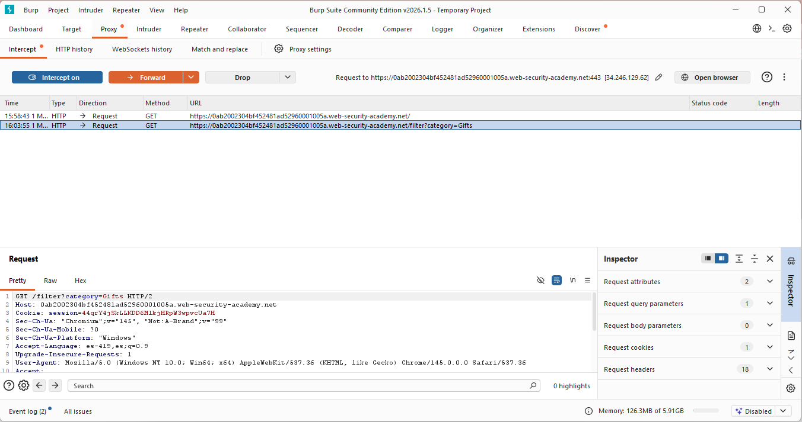
Se interceptó la solicitud GET /filter?category=Gifts y se modificó el parámetro para inyectar:
La respuesta mostró los valores "abc" y "def" renderizados como productos, confirmando una inyección exitosa y exactamente dos columnas de tipo texto compatibles con UNION.
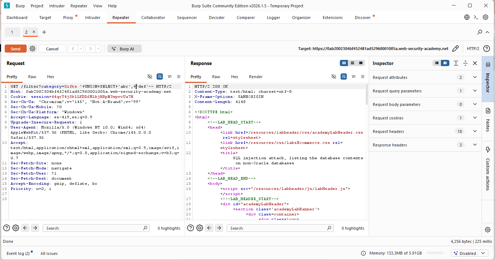
Se envió el payload:
La respuesta HTML presentó una lista de tablas del sistema, entre las cuales se identificó users_wdykho como la tabla que contiene las credenciales de usuarios.
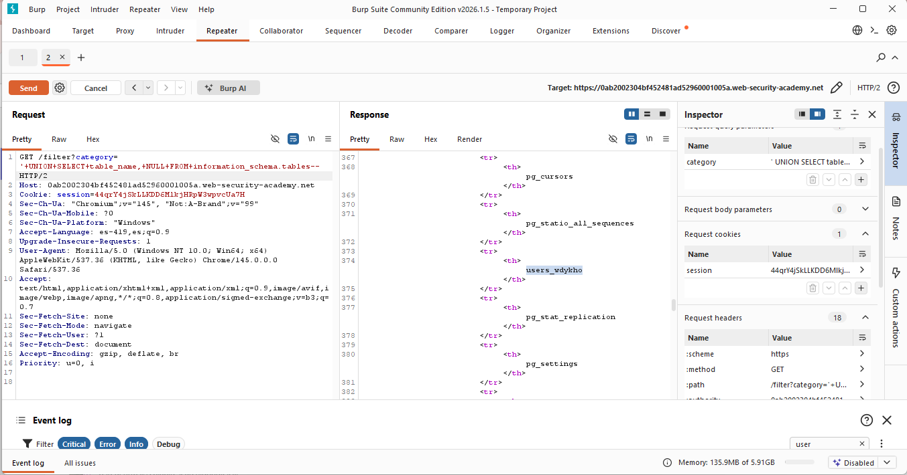
Se utilizó el payload:
La respuesta mostró las columnas de la tabla, destacando username_eclowy y password_cvzrzx como las relevantes para autenticación.
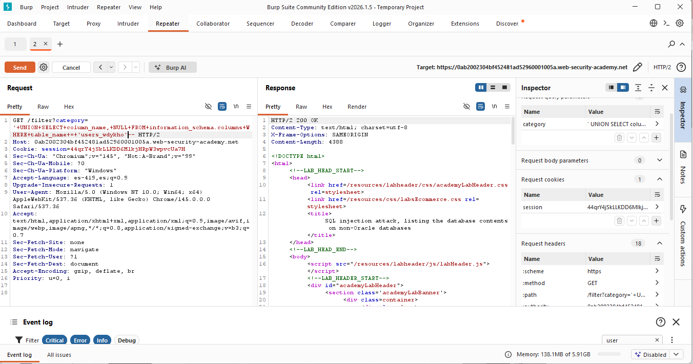
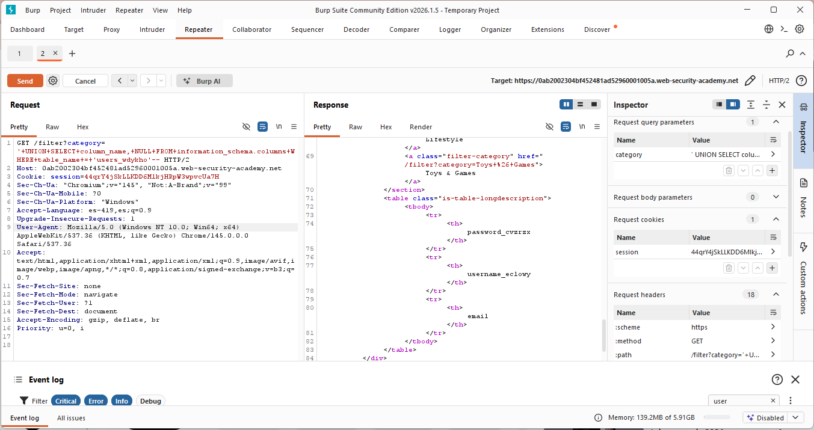
Se ejecutó:
La respuesta incluyó la lista completa de usuarios, permitiendo identificar el registro del usuario administrator junto con su contraseña correspondiente.
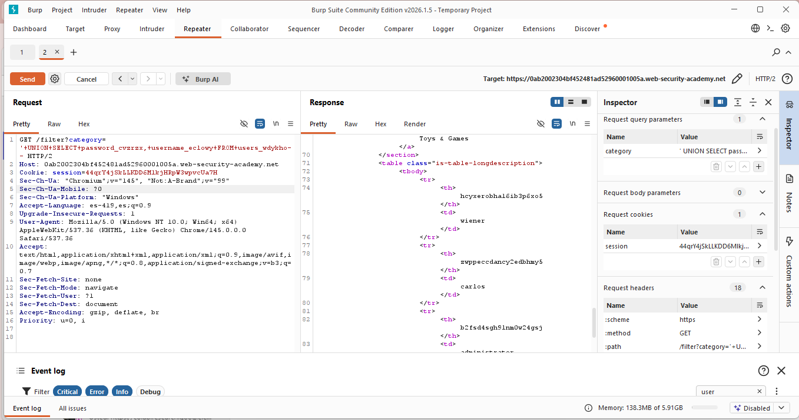
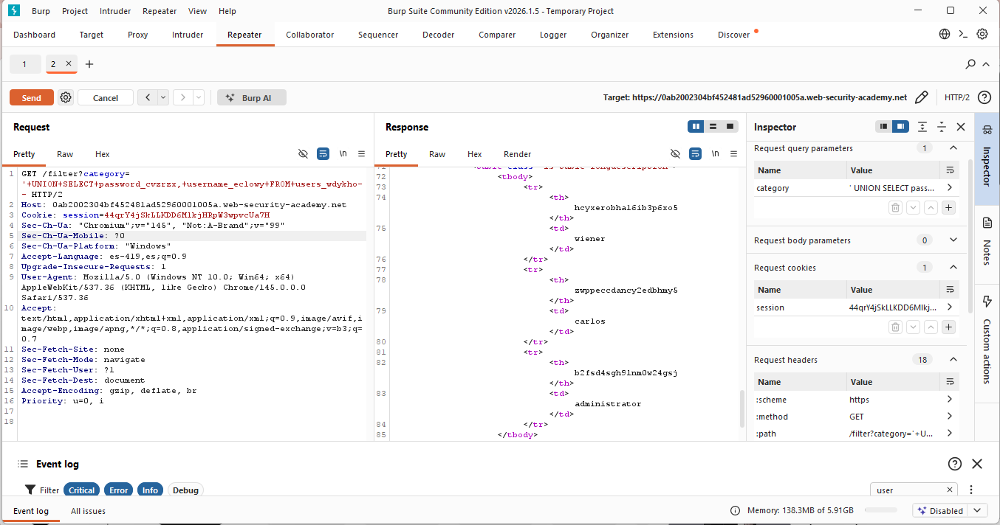
Acceder al login en /login con:
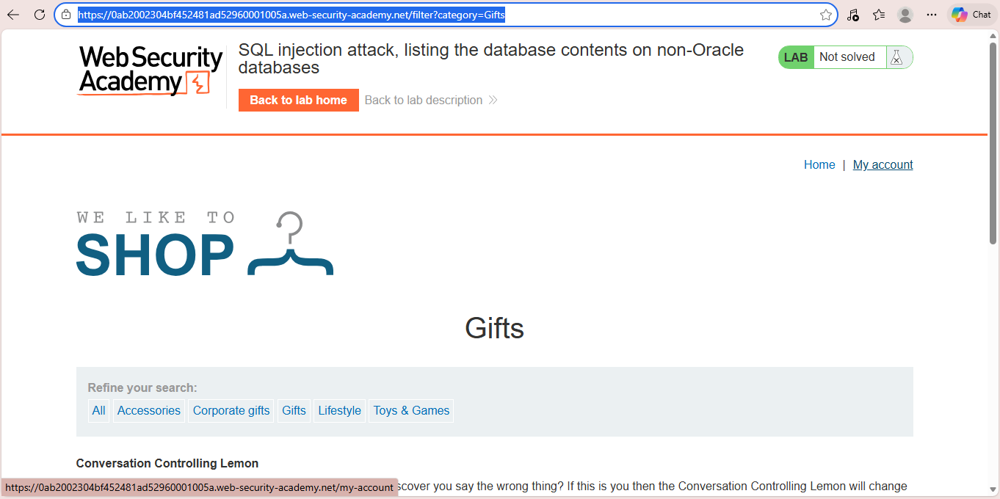
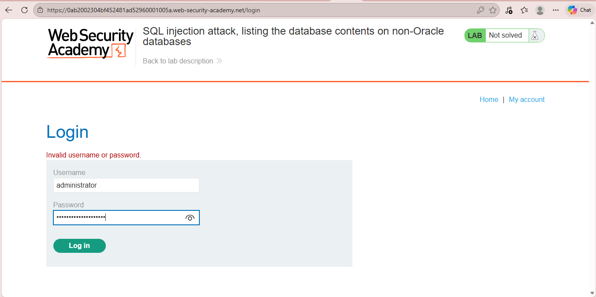
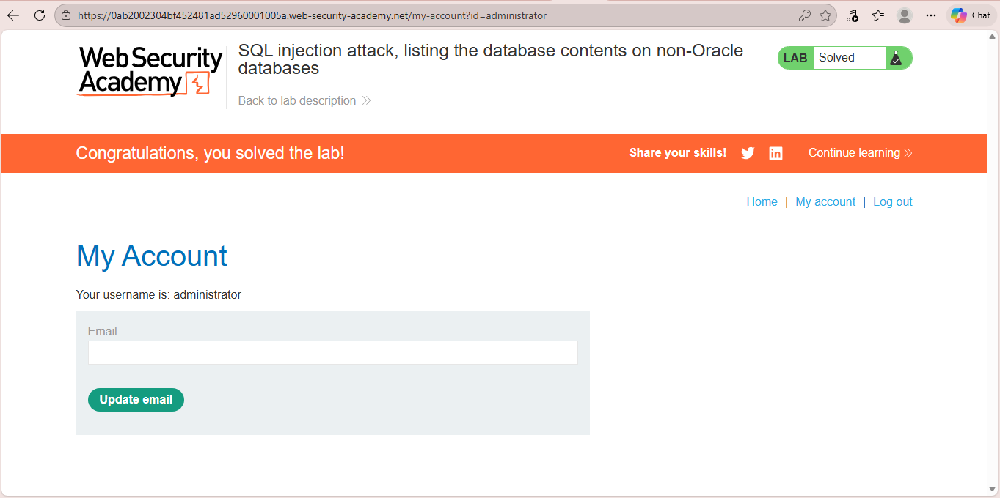
El payload base utilizado sigue la estructura: ' UNION SELECT [columna1], [columna2] FROM [tabla]--
Esta técnica permite enumeración progresiva: metadatos → estructura → datos. La confirmación de resolución se obtuvo al autenticarse exitosamente como administrator, activando el mensaje "Congratulations, you solved the lab!".
La mitigación principal consiste en el uso obligatorio de consultas parametrizadas o sentencias preparadas en el código de la aplicación (ej. PreparedStatement en Java, cursor.execute() en Python). Adicionalmente:
information_schema.Tipo de SQLi: UNION-based SQL Injection en Oracle, ya que se utiliza la cláusula UNION SELECT para combinar los resultados de la consulta original con datos de otras tablas del sistema como all_tables y all_tab_columns.
Objetivo: Enumerar el contenido de la base de datos para identificar la tabla que almacena credenciales de usuarios, descubrir sus columnas y extraer los nombres de usuario y contraseñas, con el fin de iniciar sesión como administrator.
Vulnerabilidad: La aplicación no valida ni sanitiza adecuadamente el parámetro category, permitiendo que un atacante inserte consultas SQL adicionales mediante UNION, lo que posibilita acceder a metadatos de la base de datos y extraer información sensible como credenciales de usuarios.
Se navegó a una categoría existente (Lifestyle). La solicitud GET fue interceptada y enviada a Repeater para manipulación.
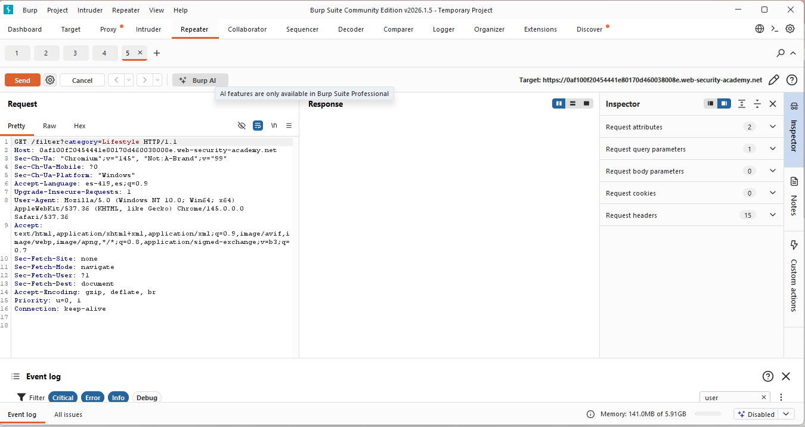
En Request Query Parameters (Ubicada en el menú de mano derecha, damos clic en la flecha para poder editar) se editó el parámetro category:
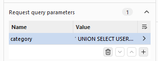
' UNION SELECT 'abc','def' FROM dual--%27%20UNION%20SELECT%20%27abc%27%2C%27def%27%20FROM%20dual--).Como respuesta tuvimos los strings "abc" y "def" aparecieron como si fueran productos, lo cual confirmó 2 columnas de tipo texto y compatibilidad con UNION en Oracle.
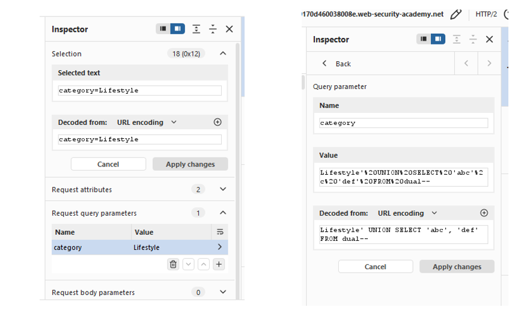
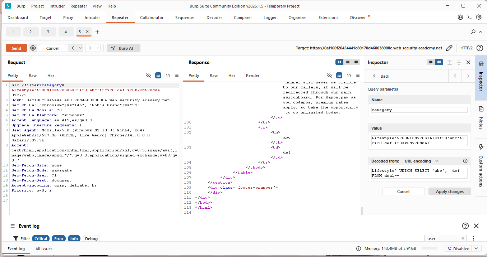
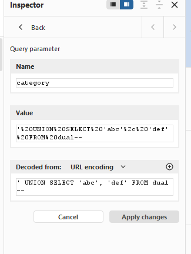
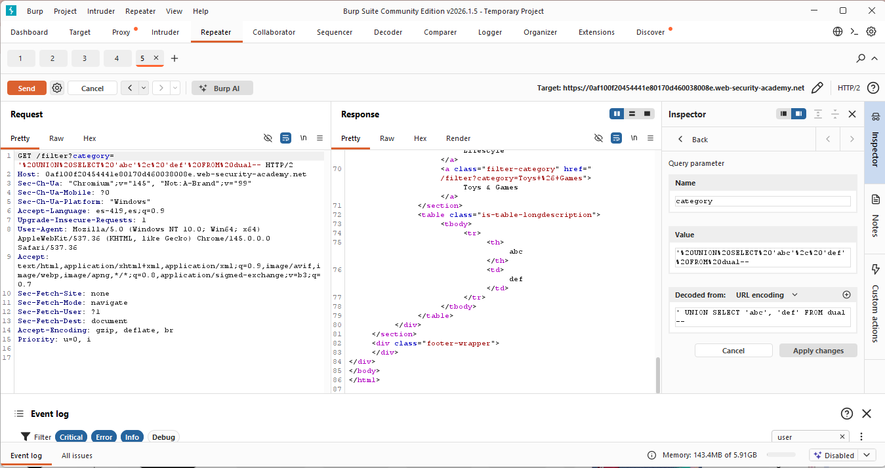
Se editó category con: ' UNION SELECT table_name, NULL FROM all_tables-- (codificado automáticamente por Burp).
Se envió y como respuesta recibimos la lista de tablas del sistema, además se identificó la tabla de usuarios: USERS_LRTWKH.
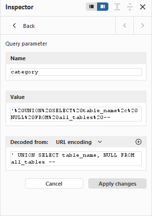
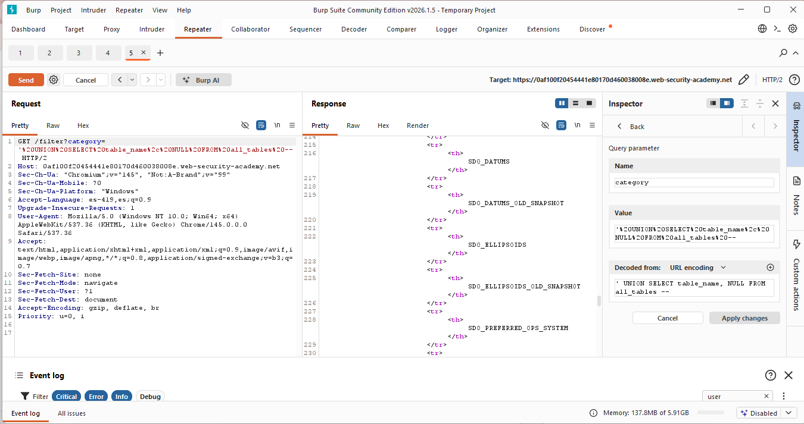
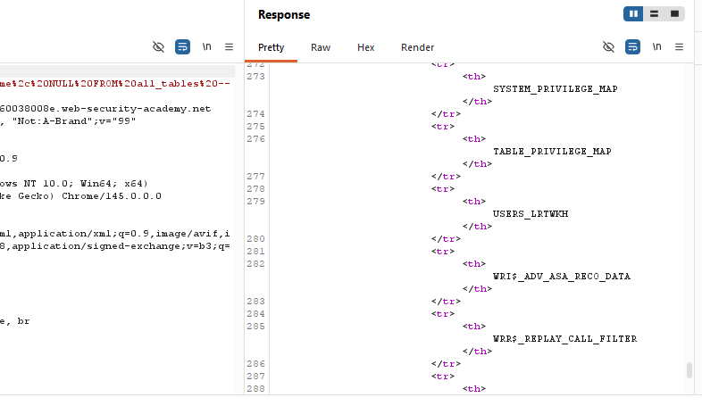
Se editó category con: ' UNION SELECT column_name, NULL FROM all_tab_columns WHERE table_name='USERS_LRTWKH'-- (codificado por Burp).
Se envió y pudimos identificar la lista de columnas, en la cual se identificaron las relevantes:
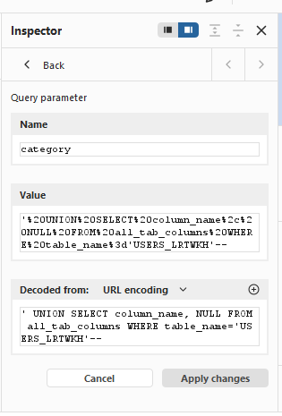
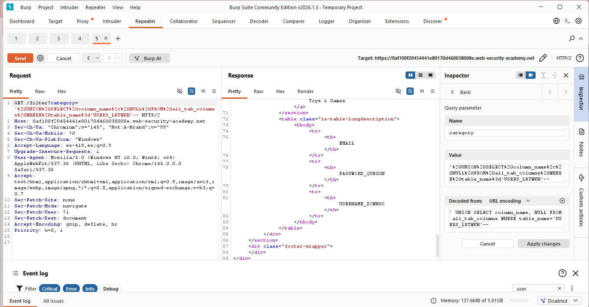
Se editó category con el payload final: ' UNION SELECT USERNAME_ZOWHGC, PASSWORD_QUEGN FROM USERS_LRTWKH-- (codificado automáticamente).
Se envió y recibimos de regreso la lista de usuarios renderizada en la página, en la cual se encontró el registro de administrator junto con su contraseña correspondiente: qj8cqcdydj1e6nxhiphj
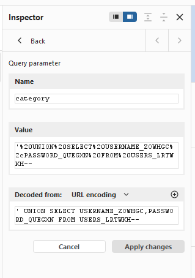
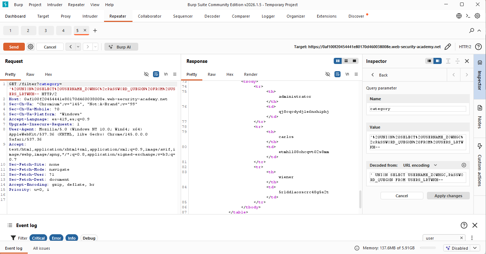
Nos dirigimos a la sección de My Account e ingresamos las credenciales extraídas:
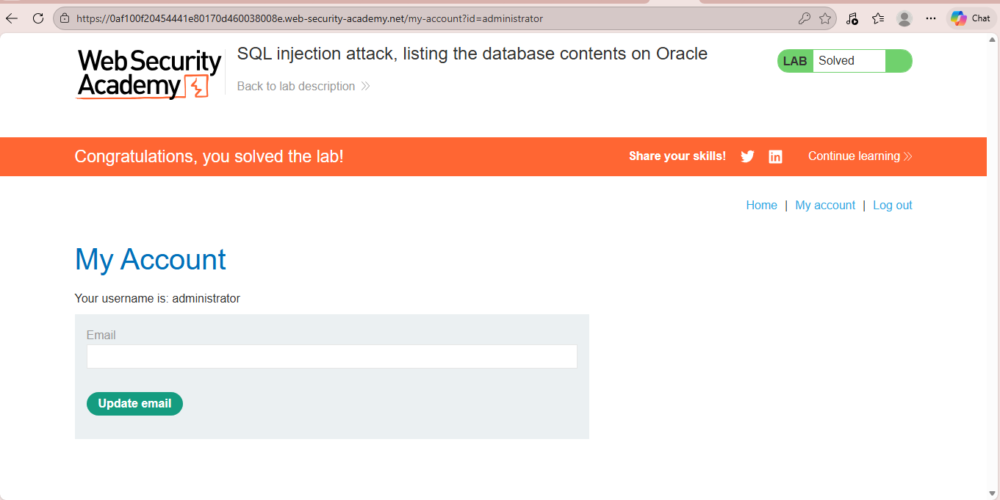
El payload principal utilizado sigue la estructura típica de un ataque Union-based en Oracle: ' UNION SELECT [columna1], [columna2] FROM [vista/tabla]--
Todos los payloads se editaron y codificaron automáticamente en Request Query Parameters de Burp Repeater para garantizar sintaxis correcta en la URL.
PreparedStatement en Java, DBMS_SQL con bind variables en PL/SQL).all_tables y all_tab_columns (principio de menor privilegio).Este laboratorio tiene una dificultad básica y está diseñado para aprender a identificar cuántas columnas devuelve una consulta SQL, requisito necesario para realizar ataques UNION.
Tipo de SQLi: SQL Injection basada en UNION (UNION-based SQL Injection). Este tipo de inyección permite combinar el resultado de una consulta original con otra consulta controlada por el atacante usando la palabra clave UNION.
Para que el ataque funcione, ambas consultas deben tener:
Por esta razón, primero se debe determinar cuántas columnas devuelve la consulta original.
El objetivo del laboratorio es determinar cuántas columnas devuelve la consulta SQL del servidor utilizando una inyección UNION.
Vulnerabilidad: La vulnerabilidad ocurre porque la aplicación inserta directamente el valor del parámetro en una consulta SQL sin validarlo ni sanitizarlo.
Primero ingresamos al laboratorio de Web Security Academy y copiamos el enlace generado para el ejercicio. Al abrir la página se muestra una tienda en línea con diferentes categorías de productos como Accessories, Clothing, Corporate gifts, Lifestyle y Tech gifts.
Estas categorías funcionan como filtros y envían una solicitud al servidor utilizando el parámetro category, el cual posteriormente será utilizado para probar la vulnerabilidad.
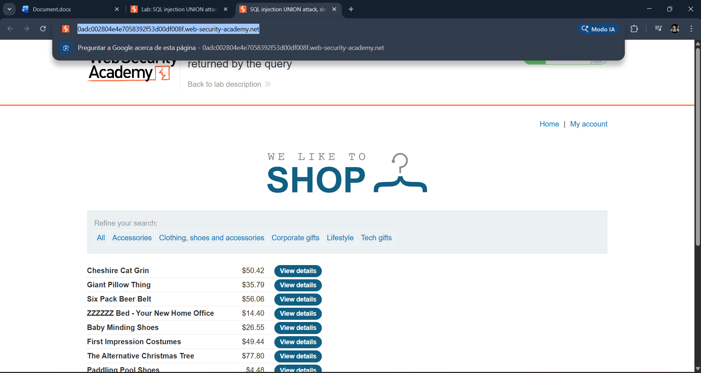
Después abrimos Burp Suite Community Edition y nos dirigimos al apartado: Proxy → Intercept.
Activamos la opción Intercept is on para que Burp pueda interceptar las peticiones HTTP entre el navegador y el servidor. Posteriormente seleccionamos Open browser, lo que abre el navegador integrado de Burp, el cual ya está configurado para pasar todo el tráfico a través del proxy.
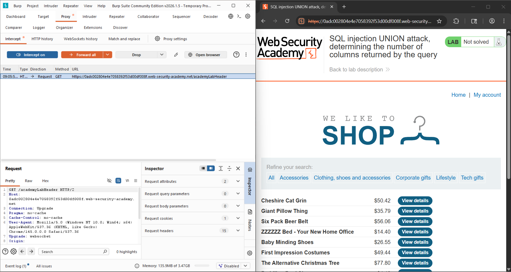
Dentro del navegador de Burp pegamos el link del laboratorio y cargamos la página. Luego seleccionamos la categoría Accessories. Al hacer clic, Burp intercepta la solicitud enviada al servidor, donde se observa una petición como la siguiente:
Esto indica que el parámetro category controla qué productos se muestran en la página.
Una vez identificada la petición que contiene el parámetro vulnerable, hacemos clic derecho sobre la solicitud interceptada y seleccionamos la opción: Send to Repeater.
El módulo Repeater permite reenviar la misma petición varias veces modificando sus parámetros, lo cual es útil para probar diferentes ataques de inyección SQL.
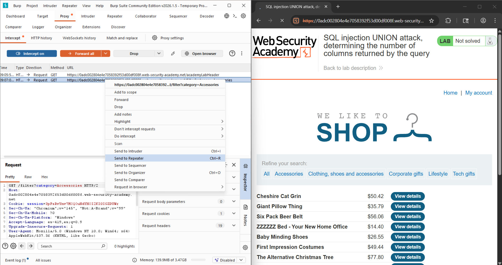
En el Repeater se modifica el parámetro category agregando el siguiente payload:
Y se envía la petición al servidor. La respuesta devuelve un error 500, lo que indica que el número de columnas en el UNION SELECT no coincide con el número de columnas de la consulta original.
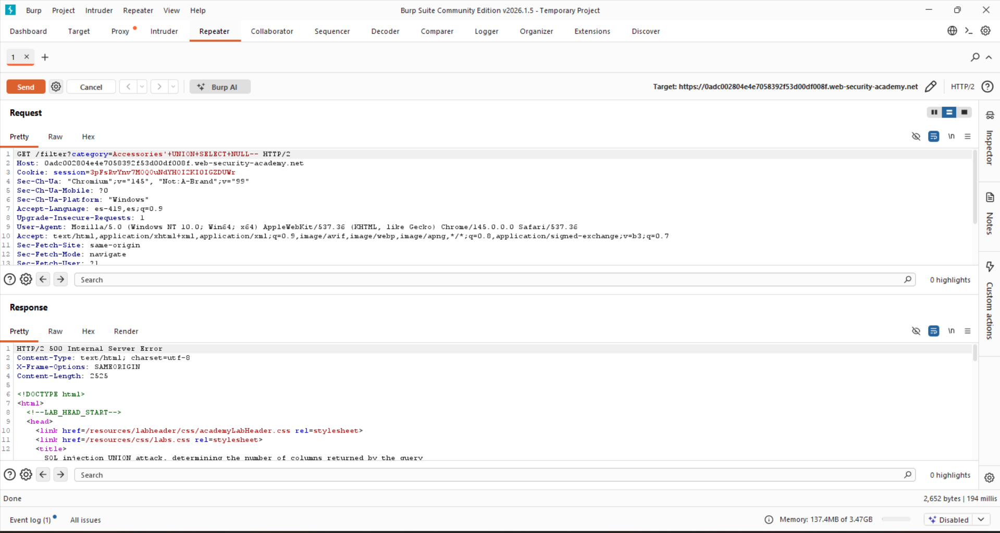
Para encontrar el número correcto de columnas se vuelve a modificar la consulta agregando más valores NULL:
Después de enviar nuevamente la petición, el servidor responde con HTTP 200 OK, lo que indica que la consulta fue aceptada. Esto confirma que la consulta original devuelve 3 columnas.
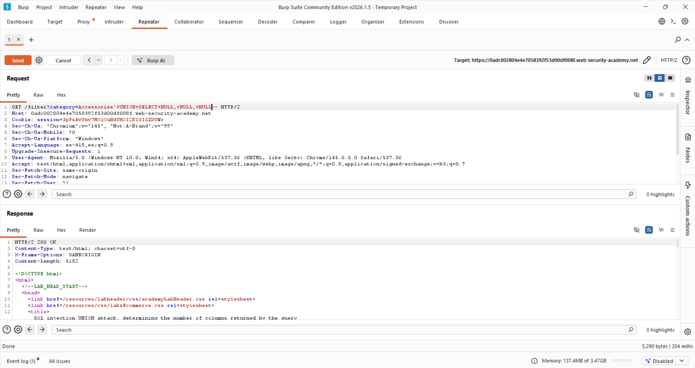
Al determinar correctamente el número de columnas, el laboratorio se marca automáticamente como resuelto y aparece el mensaje: “Congratulations, you solved the lab!”. Esto confirma que se logró completar exitosamente el objetivo del ejercicio.
Para evitar ataques de tipo UNION-based SQL Injection, se deben aplicar medidas similares que impidan la manipulación directa de las consultas SQL.
category, permitiendo únicamente valores válidos definidos previamente por la aplicación.Tipo de SQLi: SQL Injection basado en UNION (UNION-based SQL Injection).
Objetivo: Realizar un ataque SQL Injection utilizando UNION SELECT para hacer que la base de datos devuelva la cadena proporcionada por el laboratorio (xt4HXa) dentro de los resultados de la consulta.
Vulnerabilidad: La aplicación web presenta una vulnerabilidad de SQL Injection en el parámetro category del filtro de productos. El valor ingresado se concatena directamente dentro de una consulta SQL sin validación, permitiendo insertar instrucciones adicionales mediante UNION SELECT.
En este laboratorio se analiza una aplicación que muestra productos dependiendo de la categoría seleccionada (Pets, Food & Drink, etc.). El filtro envía solicitudes HTTP utilizando el parámetro category.
Durante el análisis se observa que los resultados de la consulta se muestran directamente en la página web, lo que permite identificar si una inyección SQL es exitosa y utilizar un ataque basado en UNION para insertar resultados adicionales.
Se utilizó Burp Suite para interceptar la petición HTTP generada al seleccionar una categoría. En la pestaña Proxy → Intercept, se observó la solicitud:
Este parámetro es el punto vulnerable donde se intentará la inyección SQL.
Se hizo clic derecho sobre la solicitud y se seleccionó Send to Repeater. Esto permite modificar la solicitud manualmente y analizar las respuestas del servidor de forma iterativa y rápida.
Para realizar un ataque UNION SELECT, el número de columnas debe coincidir. Se utilizó el siguiente payload:
Al enviar la solicitud, el servidor respondió con HTTP 200 OK, lo que confirma que la consulta original devuelve 3 columnas.
El siguiente paso fue determinar qué columna puede mostrar datos de tipo texto. Se reemplazó el primer NULL por la cadena del laboratorio:
El servidor respondió con un error 500 (Internal Server Error), indicando que la primera columna no acepta tipos de datos de texto.
Debido al error anterior, se probó colocar la cadena en la segunda columna:
En esta ocasión, el servidor respondió correctamente (HTTP 200 OK), indicando que la segunda columna es compatible con datos de tipo texto.
Al observar la respuesta en Render, se visualiza una nueva fila con el contenido: xt4HXa. Esto significa que el ataque fue exitoso. Al cumplirse el objetivo, la plataforma marca el laboratorio como resuelto y muestra el mensaje: “Congratulations, you solved the lab!”.
Para prevenir vulnerabilidades de SQL Injection, se recomienda aplicar las siguientes medidas:
SELECT * FROM products WHERE category = ?Tipo de SQLi: SQL Injection, específicamente mediante SQL UNION Attack, que permite combinar resultados de consultas para obtener información de otras tablas de la base de datos.
Objetivo: Explotar la vulnerabilidad de SQL Injection en el parámetro category del filtro de productos para realizar un ataque UNION, extraer los username y password de la tabla users, y utilizar las credenciales obtenidas para iniciar sesión como administrator.
Vulnerabilidad: La aplicación web no valida ni sanitiza correctamente la entrada del usuario en el parámetro category, permitiendo que un atacante inyecte consultas SQL arbitrarias. Esto posibilita ejecutar un ataque UNION que recupera datos sensibles de la tabla users.
Una vez abierto el laboratorio y dentro de Burp Suite, usaremos el navegador de este el cual es Chromium. Dentro de Chromium entraremos con la url del laboratorio.
Volviendo a Burp Suite activamos intercept off, para así interceptar la petición. Dentro del navegador, vamos a cambiar la categoria de productos, en este caso a Gifts, para hacer el tipo de petición que necesitamos, ya que ese parametro de category es vulnerable.
Para confirmar que ese parametro es vulnerable a SQLi, enviamos la petición al repetidor, dentro de Burp Suite y la modificamos cambiando la categoría “Gift”, por: '
Como resultado de repetir la petición modificada, el servidor respondió con un un error, lo cual indica que es vulnerable ya que se rompió la consulta (muy buena señal de SQLi).
Sabemos que debemos usar UNION, pero necesitamos saber cuántas columnas devuelve la consulta original. Se utilizó el payload:
El lab indica que son 2 columnas. El servidor responde “ok”, lo cual indica que la inyección se hizo correctamente y que existen al menos 2 columnas.
Se identifica si ambas columnas aceptan texto. Usa el payload que indica el lab:
Se inyecta usando de nuevo el repetidor y la consulta. Resultado esperado: En la página podemos ver que se agregó correctamente las cadenas “abc” y “def”.
El laboratorio dice que existe la tabla: users con columnas username y password. Entonces se usa el payload:
Obtuvimos como resultado las credenciales de administrador. En este caso es:
Una vez con las credenciales obtenidas, dentro del laboratorio vamos a “My account” y entramos en la página de login con las credenciales que obtuvimos. Así es como accedemos y el laboratorio queda solucionado.
Se identificó una vulnerabilidad de SQL Injection en el parámetro category del filtro de productos de la aplicación web. La aplicación no valida ni sanitiza adecuadamente la entrada del usuario antes de incorporarla a la consulta SQL, lo que permite a un atacante modificar la consulta original e incluir una instrucción SQL UNION Attack.
Mediante esta técnica fue posible combinar la consulta original con otra consulta dirigida a la tabla users, logrando extraer información sensible almacenada en la base de datos, específicamente los nombres de usuario y contraseñas. Con las credenciales obtenidas se pudo iniciar sesión como el usuario administrator, comprometiendo la seguridad de la aplicación.
Este payload cierra la consulta original, añade una instrucción UNION SELECT que recupera los campos username y password de la tabla users, y utiliza el comentario -- para ignorar el resto de la consulta original.
Tipo de SQLi: SQL Injection, específicamente mediante SQL UNION Attack, que permite combinar resultados de consultas para obtener información de otras tablas de la base de datos.
Objetivo: Explotar una vulnerabilidad de Inyección SQL en el filtro de categorías de productos para extraer las credenciales (nombres de usuario y contraseñas) de la tabla users. El reto principal radica en que la consulta original solo devuelve una columna que admite datos de tipo texto (string), por lo que es necesario combinar múltiples valores en un solo campo para extraerlos con éxito.
Vulnerabilidad: La aplicación web no valida ni sanitiza correctamente la entrada del usuario en el parámetro category, permitiendo que un atacante inyecte consultas SQL arbitrarias. Esto posibilita ejecutar un ataque UNION que combina la consulta original con otra que recupera datos sensibles de la tabla users, exponiendo credenciales almacenadas en la base de datos.
Como es costumbre, abriremos el laboratorio dentro de la web de Portswigger, copiando el enlace e iniciando Burp Suite.
Lo primero que haremos será filtrar los productos por alguno de los filtros que aparecen en la cabecera de la lista, con esto conseguiremos capturar una solicitud GET dentro del proxy de Burp Suite, la cual manda la consulta dentro del enlace, en el parámetro category.
Con el paquete atrapado, ahora podremos editar la solicitud antes de ser enviada al servidor, el único inconveniente es que debemos de cumplir con dos reglas de las bases de datos relacionales: la consulta inyectada debe devolver el mismo número de columnas que la original, y los tipos de datos deben ser compatibles.
Mediante análisis, se observó que la consulta al a BD nos esta devolviendo dos columnas, por lo cual seguiremos la siguiente sintaxis para que nuestras solicitudes sean aceptadas:
El uso de NULL en la primera posición evita errores de tipo de dato mientras que 'abc' en la segunda posición confirma que la segunda columna es la que renderiza cadenas de texto en la respuesta HTTP. El -- comenta el resto de la consulta original para evitar errores de sintaxis.
Dando múltiples inspecciones a la base de datos, determinamos que la tabla que contiene a los usuarios se llama ‘users’, y la tabla que contiene las contraseñas es ‘password’, el problema recae en que solo disponemos de la segunda columna para extraer texto, no podemos pedir username y password en columnas separadas. La solución que proponemos es concatenar ambos campos en uno solo.
Diseñamos el payload que se ingresará en category, el cual es:
Utilizamos el operador || para concatenar las dos tablas, al inyectar username||'~'||password, le indicamos a la base de datos que fusione el nombre de usuario y la contraseña, separados por el carácter ~, todo esto se extrae de la tabla users y se acomoda en la única columna de texto disponible.
Con esto comprobamos que nuestro payload fue exitoso, logrando extraer de la consulta principal los usuarios y contraseñas, demostrando una brecha crítica de confidencialidad.
Comprobamos que las credenciales son correctas accediendo a la cuenta de administrador.
Con eso concluimos el laboratorio numero 10 ‘SQL injection UNION attack, retrieving multiple values in a single column’.
Tipo de SQLi: Inyección SQL Ciega basada en Booleanos (Boolean-based Blind SQLi)
Objetivo: Explotar la vulnerabilidad para enumerar y extraer la contraseña del usuario administrator, logrando finalmente la autenticación en la plataforma.
Vulnerabilidad: El sistema procesa la cookie TrackingId en una consulta SQL sin la debida sanitización. Aunque no devuelve datos de la base de datos ni errores en pantalla (es una inyección ciega), la aplicación cambia su comportamiento y muestra un mensaje de "Welcome back" exclusivamente si la consulta inyectada resulta verdadera (TRUE). Esto permite inferir la estructura y los datos internos realizando preguntas de "sí o no" a la base de datos.
Accediendo a la página mediante el navegador de Burp Suite, revisamos y navegamos por la página, descubriendo que la pagina te muestra un ‘Welcome Back!’ al lado del botón ‘Home’ y ‘My account’, determinando que este mensaje se muestra por medio de una cookie.
Capturando la solicitud de la pagina mediante Burp Suite, podemos revisar la cookie, por lo cual lo pasaremos al repeater para probar la sesión y el mensaje.
Aquí nos centraremos en la variable de la cookie ‘TrackingId’, revisaremos si podemos ingresar desde esta variable a la BD, por lo cual probaremos una consulta simple:
Probaremos si el texto de bienvenida responde en relación de un booleano; si el texto desaparece de nuestra sesión, entonces podremos manejar la base de datos mediante la cookie.
Resultado: Tuvimos una respuesta positiva, descubriendo que el texto si despareció de la página al mandar una sentencia falsa.
Probaremos si la tabla ‘users’ existe con la siguiente consulta:
Comprobamos que el texto aparece, por lo cual confirmamos la tabla ‘users’ existe. Ahora, consultaremos la tabla para buscar al usuario administrador:
De nueva cuenta, confirmamos el usuario administrador en la tabla.
Intentaremos consultar la columna de contraseñas preguntando si la longitud es igual a cierto número mediante un Sniper Attack en Intruder:
Seleccionamos Numbers en Payload type, configuramos el rango, y activamos el Grep-Match con la frase ‘Welcome back’. Al concluir, descubrimos que la contraseña tiene 20 caracteres.
Diseñamos una consulta para extraer cada carácter iterando las 20 posiciones y probando cada posible letra/número:
Configuramos dos payloads:
Este Cluster Bomb attack realizó un total de 720 solicitudes. Al finalizar, mediante la bandera de Grep – Match (o Extract), vimos en qué posiciones la página dio TRUE.
Armando la contraseña anotando cada letra en su respectiva posición, descubrimos la contraseña del administrador: kycwnnz2eed0t1jud1op
Con el usuario y la contraseña, comprobamos los resultados en el login, los cuales fueron positivos y concluimos el laboratorio.
La mitigación principal para Blind SQL Injection incluye:
TrackingId siga un formato esperado (ej. alfanumérico de longitud fija) antes de procesarlo.Tipo de SQLi: Inyección SQL Ciega basada en Errores Condicionales (Conditional Error-based Blind SQLi)
Objetivo: Explotar una vulnerabilidad ciega en la que la aplicación no muestra diferencias en el contenido web, pero sí cambia el código de estado HTTP al ocurrir un error fatal en la base de datos. El fin es enumerar la contraseña del usuario administrator forzando errores matemáticos.
Vulnerabilidad: El servidor concatena la cookie TrackingId directamente en la consulta SQL. Si la consulta inyectada genera un error de ejecución en el motor SQL (como una división por cero), el servidor devuelve un HTTP 500 (Internal Server Error). Esto permite hacer preguntas de "sí o no" condicionando un error deliberado a una premisa verdadera.
Entramos al laboratorio e inspeccionamos la página; esta vez no hay cambios visibles. Procederemos a atrapar una solicitud y ver cómo se comporta el sitio agregando una comilla simple (') al final del TrackingId.
Al agregar una comilla simple, el servidor arrojó un error. Al agregar dos comillas (''), el error desapareció, confirmando la inyección. Luego probamos:
Esta consulta falló. Sospechando de Oracle, probamos con su tabla dual:
No recibimos error, confirmando que es una base de datos Oracle, la cual requiere estrictamente la cláusula FROM.
Construimos una estructura lógica utilizando CASE combinada con un error matemático forzado (división por cero):
Cada vez que la sentencia sea verdadera (TRUE), el servidor regresará un "Internal Server Error". Usaremos este error como ventana para consultar información.
Confirmamos la existencia del administrador (recibiendo un error 500):
Luego determinamos la longitud de la contraseña usando Intruder (Sniper Attack):
Editamos el Grep – Match para marcar los errores 500. Los resultados mostraron que la página dio error en el número 20, confirmando esa longitud.
Para conseguir la contraseña, diseñamos un payload para consultar cada carácter:
Para evitar el ruido y el tiempo excesivo de un ataque automático masivo, se optó por iterar manualmente las posiciones del 1 al 20, usando el diccionario de caracteres en Intruder para cada posición.
Al finalizar las iteraciones, descubrimos la contraseña: 0xkkbi6793o8z2ep4map. Procedimos a probarla en la sección de login, logrando un inicio de sesión correcto y concluyendo el laboratorio.

Tipo de SQLi: Inyección SQL Basada en Errores Visibles (Visible Error-based / In-band SQLi)
Objetivo: Comprometer la cuenta del usuario administrator forzando a la base de datos a revelar sus credenciales en texto plano a través de los mensajes de error devueltos en la respuesta HTTP.
Vulnerabilidad: La aplicación carece de un manejo seguro de excepciones (Custom Error Pages). El servidor refleja el error crudo (verbose error) en el frontend, lo que permite inyectar funciones de conversión de tipos de datos incompatibles (Type Casting) para que el motor SQL imprima el dato confidencial directamente en el texto del error.
Entramos al laboratorio navegando por el sitio sin ningún cambio visible. Capturamos una request para editar su Cookie y agregamos una comilla simple (') al final del código.
Resultado: La página retornó un texto de error SQL crítico que reveló la estructura exacta de la consulta subyacente y confirmó que la inyección ocurría dentro de una cadena delimitada por comillas simples.
Comentamos la consulta agregando -- al final de la comilla para descartar entradas posteriores. La página cargó sin problemas, indicando que el error previo era de sintaxis y confirmando nuestro control sobre las consultas.
Adaptamos el payload a una consulta genérica con SELECT, casteando el valor a INT para forzar un error de conversión:
El resultado fue un error en el argumento AND, indicando que debe ser booleano. Ajustamos la consulta a una comparación:
Esto nos regresó a la página principal (TRUE), pero no nos dio retroalimentación de datos.
Intentamos consultar la tabla de usuarios:
El error indicó que la respuesta estaba truncada debido a un límite de caracteres en la cookie. Como el código de sesión no es necesario para la inyección, lo eliminamos para ganar espacio:
Añadimos LIMIT 1 ya que CAST solo opera sobre un valor único. El motor SQL intentó convertir el nombre de usuario a entero, falló y escupió el nombre del usuario en el reporte de error.
Con el administrador identificado como el primer registro, diseñamos la consulta para extraer la contraseña:
El servidor arrojó un nuevo error de sintaxis que contenía la contraseña en texto plano: i3rpmtbwp1xi74smj59z. Procedimos a validar las credenciales en el login de forma exitosa.

Tipo de SQLi: Blind SQL Injection basada en tiempo (Time‑based)
Objetivo: Explotar una vulnerabilidad de SQL Injection para forzar un retraso de 10 segundos en la respuesta del servidor, demostrando que la consulta SQL se ejecuta de forma síncrona.
Vulnerabilidad: La aplicación utiliza una cookie de seguimiento (tracking cookie) para análisis. El valor de esta cookie se inserta directamente en una consulta SQL sin validación, permitiendo inyectar condiciones que generen retrasos temporales.
Se ingresa a la plataforma de Web Security Academy y se accede al entorno del laboratorio, copiando la URL proporcionada para las pruebas.
Se pega el enlace en el navegador de Burp Suite para capturar las peticiones HTTP en el proxy. Se analiza el historial de tráfico para identificar la petición que contiene la cookie de seguimiento TrackingId.
Se envía la petición al módulo Repeater para manipularla de forma manual. Se consulta la documentación de ayuda del laboratorio en la sección "Time delays" para estructurar el payload adecuado según el motor de base de datos correspondiente.
Se modifica la cookie TrackingId agregando una comilla simple (') después del valor numérico. Se inyecta el comando de retraso concatenando con el signo + (en lugar de espacios) y se finaliza con doble guion (--) para comentar el resto de la consulta original.
Al enviar la petición modificada, observamos en el Repeater un retraso de respuesta de 10 segundos exactos. El servidor procesa la instrucción de suspensión antes de devolver la respuesta HTTP.
Al enviarlo, efectivamente hace el retraso de 10 segundos, dándonos el laboratorio como resuelto y mostrando el mensaje: “Congratulations, you solved the lab!”.

pg_sleep o dbms_pipe.receive_message) inyectados en las cookies.Tipo de SQLi: Blind SQL Injection basada en tiempo (Time-based) y recuperación de información.
Objetivo: Explotar una vulnerabilidad de inyección SQL basada en tiempo para inferir, carácter por carácter, la contraseña del usuario administrator y lograr el acceso a la plataforma.
Vulnerabilidad: La aplicación utiliza una cookie de seguimiento (TrackingId) que se inserta de forma insegura en una consulta SQL síncrona. Como la base de datos es PostgreSQL, podemos inyectar la función pg_sleep() para forzar retrasos de tiempo condicionales. Al medir cuánto tarda en responder el servidor, podemos deducir si una condición inyectada es verdadera o falsa.
Se inicia el laboratorio y se abre Burp Suite para capturar la navegación. Identificamos la petición HTTP que contiene la cookie TrackingId, que será nuestro punto de inyección, y la enviamos al Repeater.
Aplicamos el primer payload de prueba:
El servidor tarda 10 segundos en responder, confirmando que la condición es verdadera. Para validar, enviamos:
Como 1 no es igual a 2, la aplicación responde inmediatamente sin demora.
Enviamos la petición al Intruder para un ataque enfocado en la longitud de la contraseña. Configuramos un contador numérico (1 al 26) usando LENGTH(password)>§1§. Notamos que a partir de la longitud 20 el tiempo de respuesta cambia, confirmando que la contraseña tiene exactamente 20 caracteres.
Preparamos el payload de extracción de datos en el Repeater:
En el Intruder, seleccionamos el tipo de ataque Cluster Bomb con dos payloads:
Configuración Crítica: En la pestaña "Resource pool", configuramos Maximum concurrent requests: 1 para evitar que múltiples peticiones síncronas generen falsos positivos en el tiempo de respuesta.
Al concluir, ordenamos los resultados por la columna "Response received" (tiempo de respuesta). Las peticiones con retrasos superiores a 5000ms nos revelaron los caracteres en su posición respectiva.
Contraseña obtenida: tmmowcfokak4zmj52ky0
Ingresamos a "My account" con el usuario administrator y la contraseña extraída, logrando el acceso exitoso y concluyendo el laboratorio.

pg_sleep o SUBSTRING sean ejecutados desde una entrada de usuario.Tipo de SQLi: Inyección SQL fuera de banda (Out-of-band SQLi / OAST).
Objetivo: Explotar una vulnerabilidad de inyección SQL en una cookie de seguimiento, causando una búsqueda DNS en Burp Collaborator.
Vulnerabilidad: Cookie de Rastreo; puede modificarse por una carga útil que mezcla la inyección SQL con una técnica XXE (XML External Entity) para activar una interacción con el servidor Burp Collaborator. Esta técnica aprovecha configuraciones débiles en los analizadores XML para forzar peticiones a redes externas.
Nota: Para esta práctica es necesario utilizar la versión **Professional** de Burp Suite para acceder al cliente de Collaborator.
Se envían todas las solicitudes HTTP que realiza el navegador. Posteriormente, se manda al Repeater la solicitud HTTP de la página de inicio. En las cookies se encuentra el tracking_id, la vulnerabilidad que tenemos a la mano para poder explotar el sitio.
Se genera un “Burp Collaborator Client”, la herramienta principal para este laboratorio. Este genera un subdominio específico que permite detectar vulnerabilidades que no devuelven una respuesta directa en el sitio web (invisibles al atacante de forma directa).
Con esta herramienta, el subdominio se sondea para confirmar que la búsqueda DNS se haya realizado con éxito tras la inyección.
Siguiendo la pista de la actividad en la sección de "Búsqueda DNS", seleccionamos el payload para bases de datos Oracle. El XXE que nos interesa utiliza funciones de red de la base de datos para forzar la interacción externa.
Esta carga útil se mezcla con la consulta de la cookie incluyendo el subdominio generado. La función del payload no es “tomar información” en este paso, sino actuar como un radar, forzando a la base de datos a llamar a nuestro servidor.
Se le agrega una comilla simple (') para cerrar la cadena de texto original de la cookie de seguimiento en la consulta SQL subyacente:
Al colocar la comilla al principio del payload, cerramos el valor y preparamos la consulta para inyectar el código malicioso. Utilizamos el operador || (u otro método de concatenación según el contexto) para unir la consulta original con la inyectada.
Al enviar la petición en el Repeater, sondeamos las interacciones en el cliente de Collaborator. Por el nombre del dominio y la IP en los registros de entrada (DNS/HTTP), corroboramos que se logró realizar la búsqueda con éxito.
Esto muestra que la base de datos ejecutó nuestra instrucción y salió a internet para resolver el dominio, confirmando que el laboratorio ha sido completado.

Tipo de SQLi: Inyección SQL fuera de banda (Out-of-band SQLi / OAST).
Objetivo: Explotar una vulnerabilidad de inyección SQL en una cookie de seguimiento, ahora con exfiltración de información, obteniendo las claves de acceso del administrador.
Vulnerabilidad: Similar al laboratorio anterior, se aprovecha una vulnerabilidad en la cookie de rastreo para forzar una interacción externa. Sin embargo, en este caso la carga útil se diseña para que el servidor de la base de datos incluya datos sensibles (como la contraseña) como parte del subdominio consultado en la búsqueda DNS.
Al agregar el sitio web al proxy y tomar la solicitud del sitio principal, obtenemos el resultado en el Repeater confirmando que el sitio funciona correctamente.
Creamos un nuevo subdominio único utilizando el cliente de Burp Collaborator. Este actuará como nuestro receptor de información fuera de banda.
Consultando el acordeón de SQLi de Portswigger, seleccionamos la carga útil para Oracle. A diferencia de la práctica anterior, que sólo hacía un "ping" para confirmar la vulnerabilidad, este payload nos permite realizar consultas para extraer información de la BD.
La estructura del payload utiliza funciones de red para resolver un nombre de dominio que nosotros construimos dinámicamente.
Lo que buscamos es obtener la contraseña del usuario administrador. Realizamos la inyección de SQL en la cookie utilizando los caracteres +||+, que funcionan como la sintaxis de concatenación de cadenas en Oracle.
Nótese cómo la consulta SELECT password FROM users se concatena directamente antes del subdominio de Collaborator.
Al enviar la petición y sondear nuestro subdominio en el cliente de Collaborator, obtenemos la clave del administrador concatenada como un prefijo en la consulta DNS recibida.
Resultado: Identificamos la contraseña en los logs de Collaborator. Intentamos entrar con la contraseña obtenida y el usuario administrator, lo cual nos permite el acceso exitoso, terminando el laboratorio con éxito.

Prepared Statements para neutralizar la capacidad del atacante de inyectar lógica de concatenación en las cookies.UTL_HTTP, UTL_INADDR o la funcionalidad de XMLTYPE que permite interacciones externas.Tipo de SQLi: SQL Injection basada en UNION con bypass de filtros mediante codificación XML.
Objetivo: Explotar la vulnerabilidad de inyección SQL en la función de verificación de stock para obtener datos de otras tablas, específicamente recuperar el usuario y contraseña del administrador, y posteriormente iniciar sesión.
Vulnerabilidad: La aplicación web presenta una vulnerabilidad en la función que consulta el stock de productos. Los datos enviados en formato XML se insertan directamente en una consulta SQL. Aunque existe un filtro (WAF) que bloquea caracteres sospechosos, este puede ser evadido utilizando codificación de entidades XML, lo que permite inyectar consultas de forma indirecta.
Observamos que los datos se envían en una estructura XML: <stockCheck><productId>1</productId><storeId>1</storeId></stockCheck>.
Si intentamos inyectar un payload simple como 1 UNION SELECT NULL en el storeId, el servidor responde con un 403 Forbidden y el mensaje "Attack detected".
Para evadir el filtro, instalamos la extensión Hackvertor en Burp Suite. Seleccionamos nuestro payload y aplicamos la codificación hex_entities. Esto convierte el texto claro en entidades hexadecimales que el filtro no reconoce como maliciosas.
Determinación de columnas: Probamos con el payload codificado. El servidor responde con un 200 OK, confirmando que la inyección es procesada correctamente tras ser decodificada por el parser XML interno.
Según el cheat sheet de PortSwigger, para concatenar valores en una sola columna en PostgreSQL/MySQL usamos el operador ||. El payload final inyectado en storeId (y luego codificado) es:
Obtenemos la respuesta con el texto administrator~[PASSWORD]. Copiamos la contraseña y procedemos a iniciar sesión en la sección "My account", lo cual marca el laboratorio como resuelto.

El payload utilizado es: 1 UNION SELECT username || '~' || password FROM users.
SE.... Esto engaña al WAF (que busca la palabra "SELECT" en plano), pero el servidor de base de datos recibe el texto ya decodificado por el parser XML y lo ejecuta.<storeId> sea estrictamente numérico.users innecesariamente.